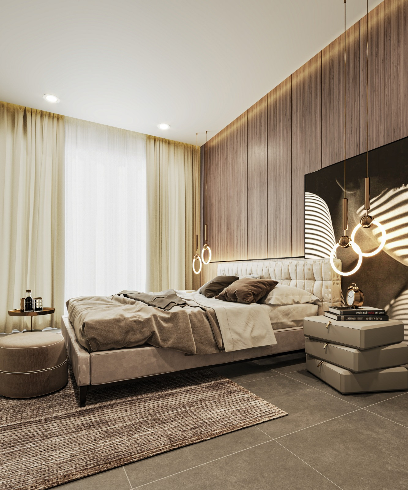
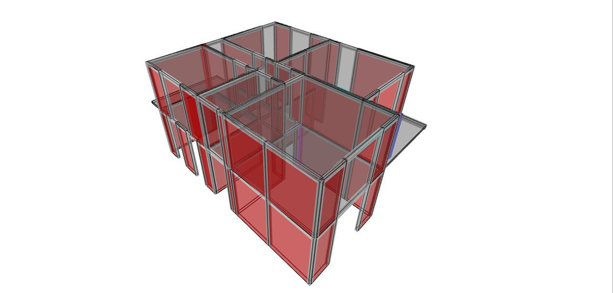
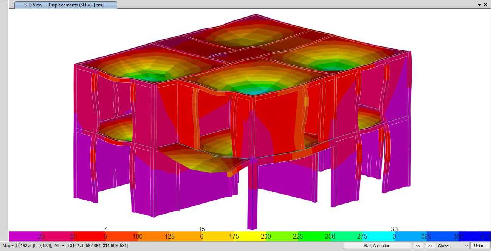
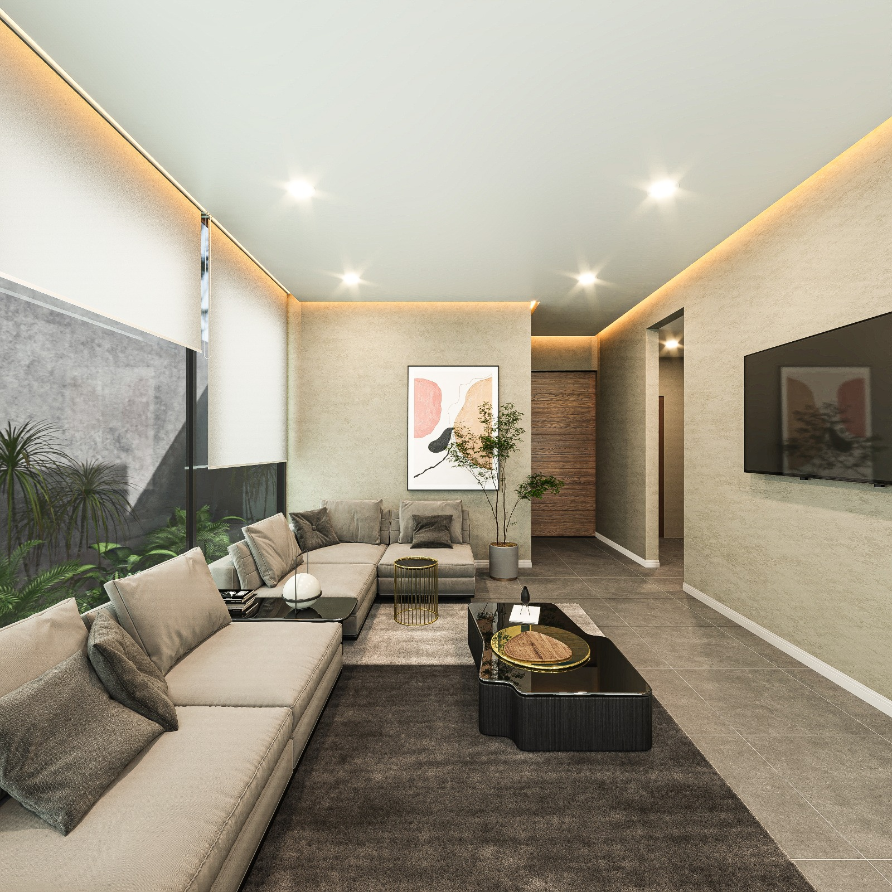
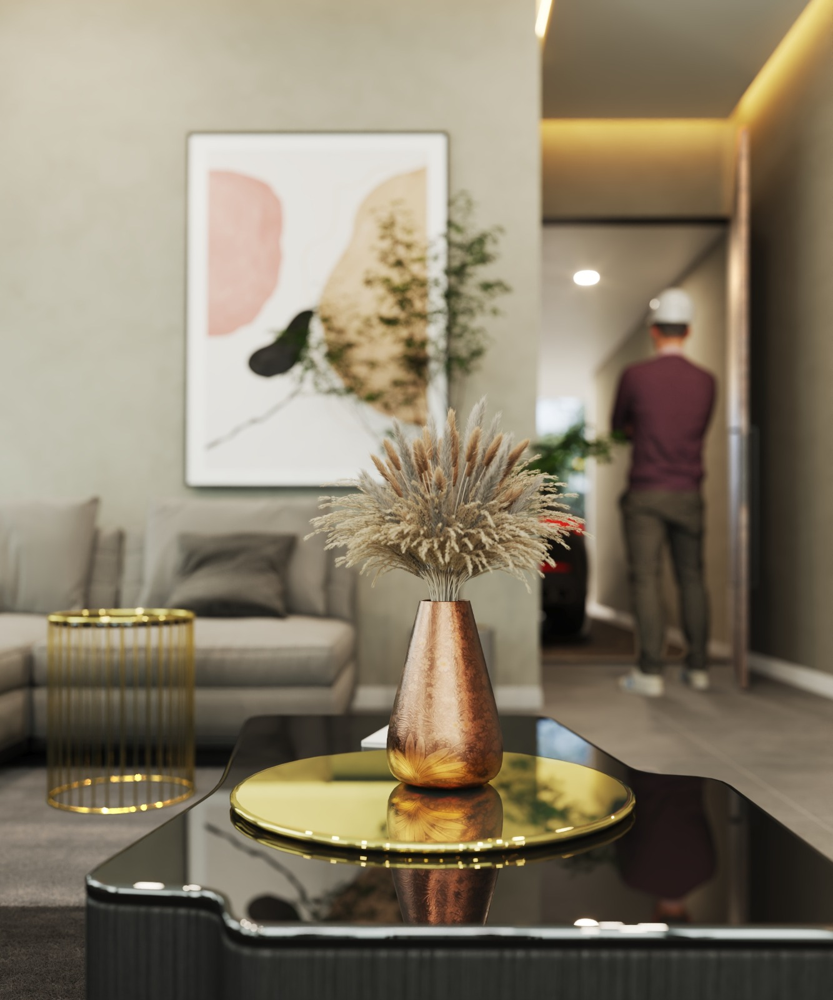
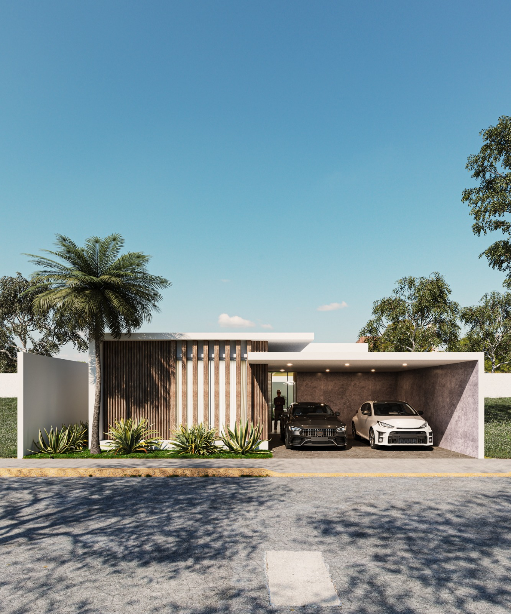
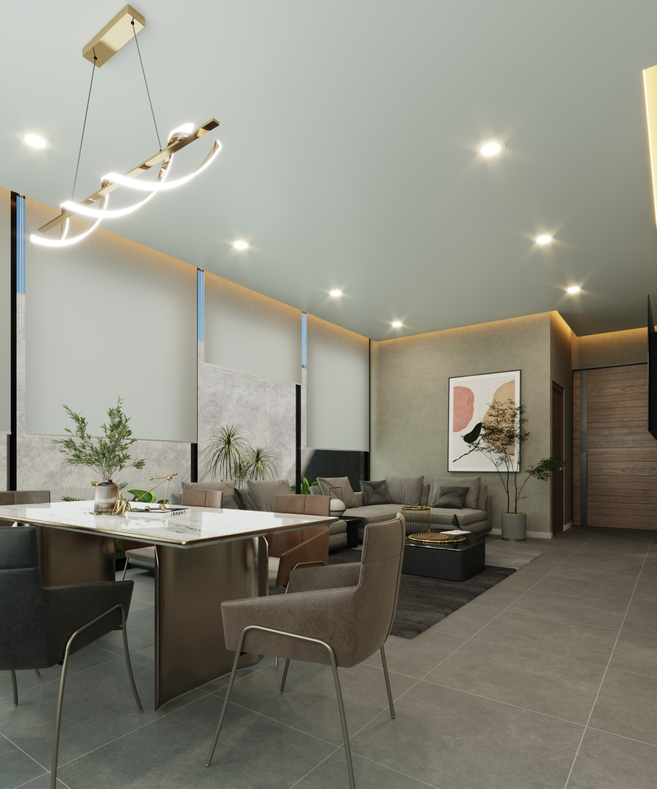

Precisión en tu obra
Perseverancia y precisión que impulsan tu proyecto, al siguiente nivel.

Soluciones topográficas enfocadas en obra, precisión y tiempos de entrega.
Obtención precisa de información del terreno para proyectos de ingeniería y construcción.
Apoyo topográfico para replanteos, niveles y seguimiento de avances en construcción.
Cálculo de volúmenes para movimientos de tierra, terracerías y control de material.
Ubicación precisa de ejes, niveles y elementos del proyecto directamente en campo.
Convertimos datos topográficos reales en visualizaciones precisas que te permiten entender tu proyecto antes de construir, reduciendo incertidumbre y asegurando decisiones más claras desde el inicio.
Lo que viene en Zenit — nuevos servicios, tecnología y anuncios importantes.
Levantamientos aéreos de alta precisión para grandes extensiones y zonas de difícil acceso.
Modelado tridimensional de estructuras y terrenos con tecnología láser de última generación.
Visor UTM, conversor de coordenadas, pendientes y más — gratis en nuestra web.
Equipo, accesorios y materiales topográficos seleccionados — pronto disponibles para compra directa desde nuestra web.
Galería de referencia. Toca una imagen para verla en grande.


En Zenit transformamos tus ideas en visualizaciones reales y precisas. A partir de levantamientos topográficos, generamos renders que respetan cada dimensión del espacio para que veas exactamente cómo quedará antes de construir.
No es solo diseño: es claridad, viabilidad y control desde el inicio.







Enfoque empresarial, técnica y compromiso para acompañar proyectos con resultados.
En Zenit Topografía brindamos servicios de topografía e ingeniería orientados a satisfacer las necesidades de nuestros clientes, aportando información precisa y soluciones confiables. Nuestro compromiso es ofrecer un servicio basado en calidad, precisión y eficiencia.
Ser una empresa reconocida y confiable en el sector de la topografía y la ingeniería, destacándonos por la calidad de nuestros servicios, la innovación en nuestras soluciones y el compromiso con el éxito de nuestros clientes.
Creemos que el trabajo conjunto con nuestros clientes es la clave para lograr los mejores resultados. Nos enfocamos en comprender las necesidades específicas de cada proyecto para ofrecer soluciones técnicas adecuadas, confiables y eficientes.
Listos para apoyar tu proyecto. Contáctanos y te respondemos por WhatsApp.
Arrastra tu archivo aquí o
Formatos soportados: TXT · CSV | Columnas: Nombre,X,Y — X,Y — Nombre X Y
Ingresa los vértices del polígono en orden. Mínimo 3 puntos.
| # | Nombre | X — Este (m) | Y — Norte (m) |
|---|